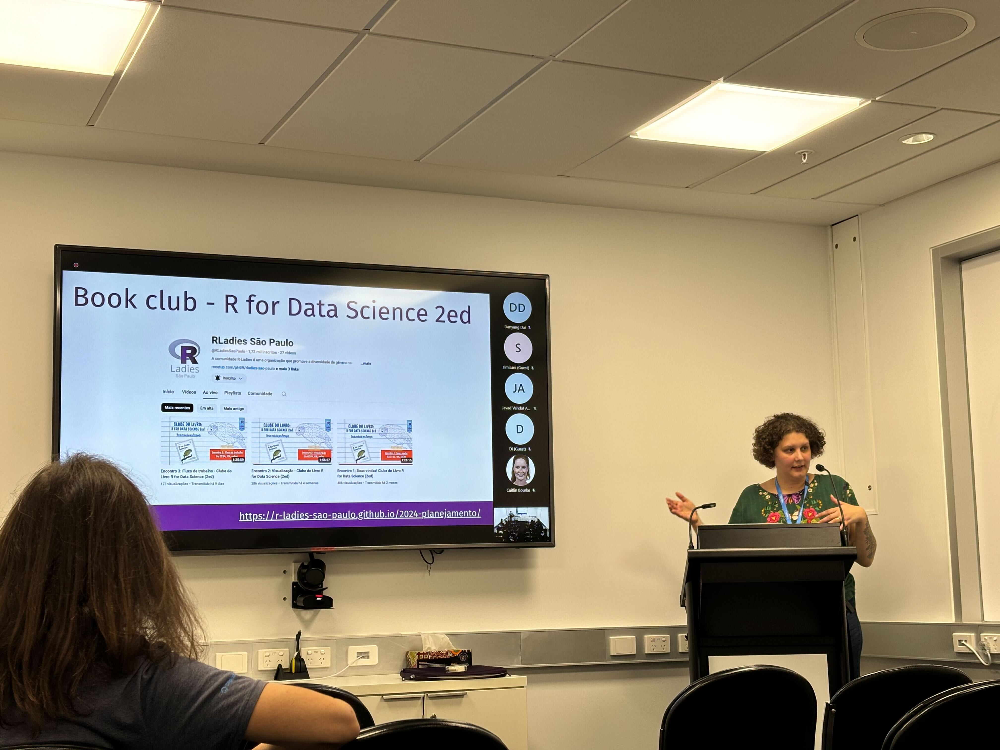
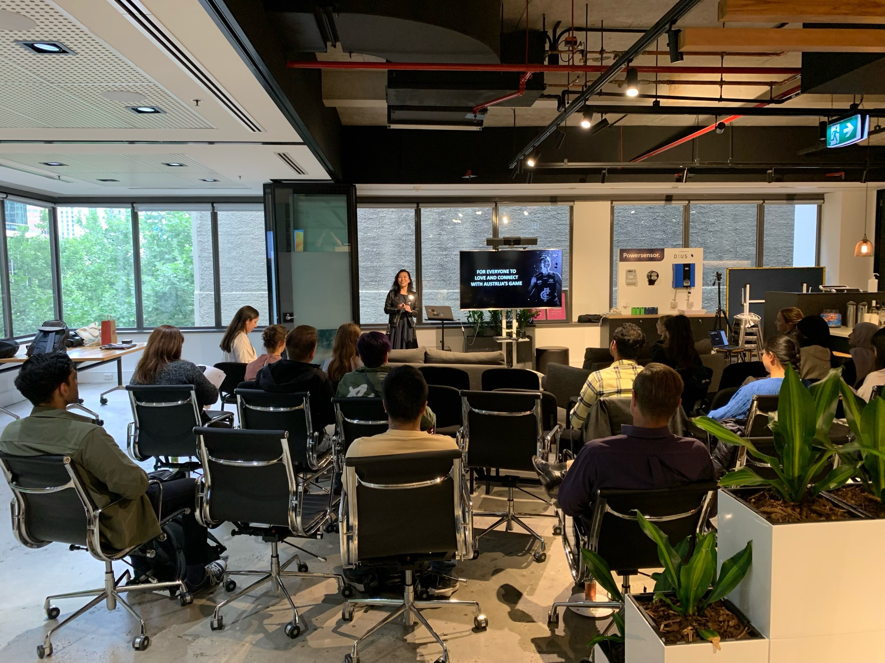
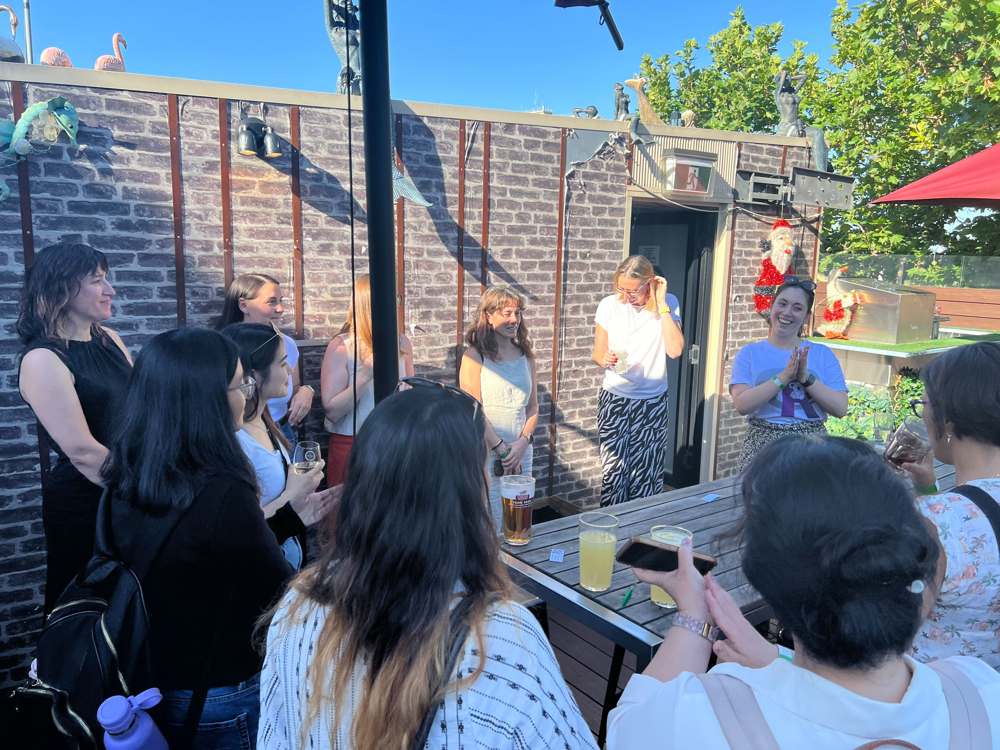
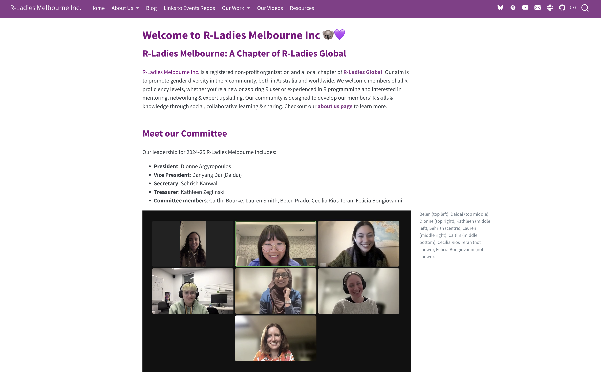
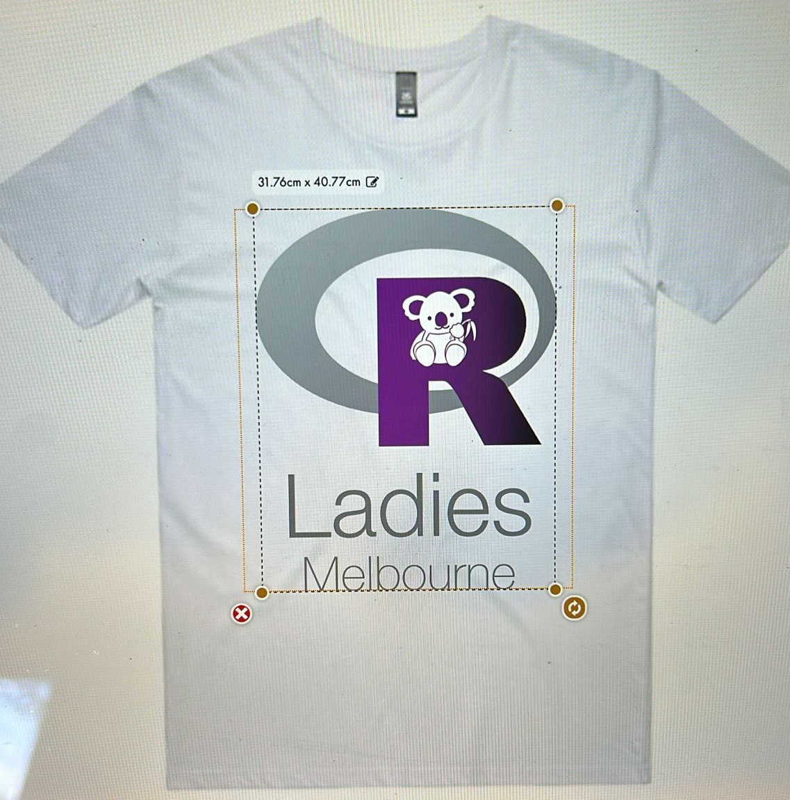
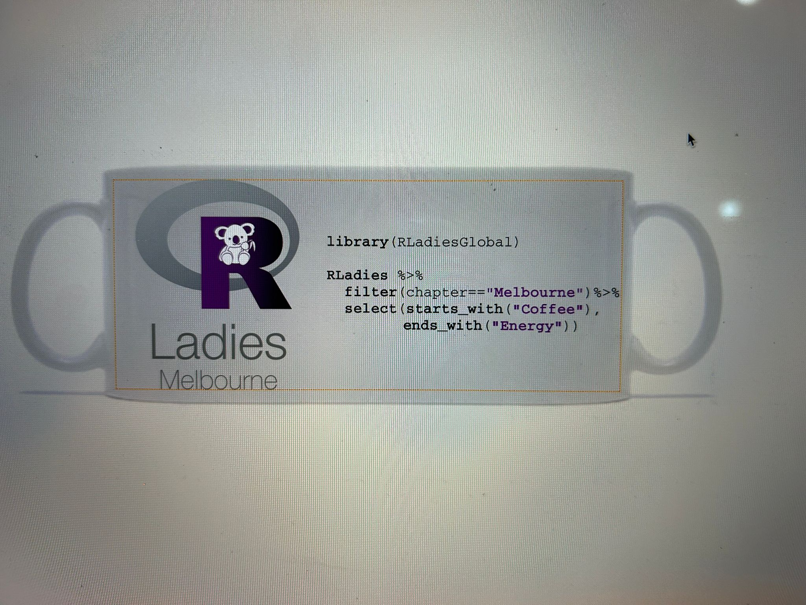
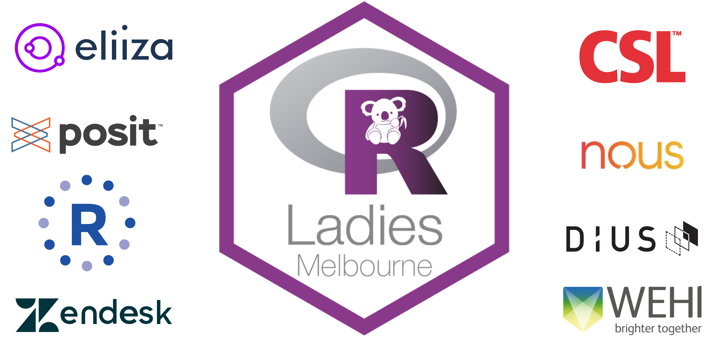

R-Ladies Melbourne Inc. Annual Report 2024-25
R-Ladies Melbourne Inc.: A Chapter of R-Ladies Global
R-Ladies Melbourne Inc. is a registered non-profit organization and a local chapter of R-Ladies Global. Our aim is to promote gender diversity in the R community, both in Australia and worldwide. We welcome members of all R proficiency levels, whether you’re a new or aspiring R user or experienced in R programming and interested in mentoring, networking & expert upskilling. Our community is designed to develop our members’ R skills & knowledge through social, collaborative learning & sharing. Checkout our website to learn more.
Our 2024-25 Committee
Our leadership for 2024-25 R-Ladies Melbourne included:
- President: Dionne Argyropoulos
- Vice President: Danyang Dai (Daidai)
- Secretary: Sehrish Kanwal
- Treasurer: Kathleen Zeglinski
- Committee members: Caitlin Bourke, Lauren Smith, Belen Prado, Cecilia Rios Teran, Felicia Bongiovanni, Mansi Aggarwal, Harriet Mason, Kirsty McCann, Megan Soria

Belen (top left), Daidai (top middle), Dionne (top right), Kathleen (middle left), Sehrish (centre), Lauren (middle right), Caitlin (middle bottom), Cecilia Rios Teran, Felicia Bongiovanni, Mansi Aggarwal, Harriet Mason, Kirsty McCann, Megan Soria [not shown].
We recruited many committee members at our final events of 2024, welcoming 5 new members by the end of the year.
Meetup Events
Meetups Hosted:
- Increasing diversity in R-Ladies São Paulo.
- It Takes a Spark 2024: Become a Disease Detective.
- Leveraging the Power of Data in Sport.
- End of Year Networking Event
- Inspiring the Next Generation: R-Ladies Melb at “It Takes A Spark” Conference
- PGEforge: towards an open analysis ecosystem for malaria genomic epidemiology



Event Highlights:
Increasing diversity in R-Ladies São Paulo
We kicked off our 2024–25 committee events with an incredible session featuring international speaker Dr. Beatriz Milz, a co-organizer of R-Ladies São Paulo, Brazil!
Beatriz shared her personal journey and community-building experiences, highlighting insights from her blog post published in April 2023.
Her talk focused on the intentional steps taken by R-Ladies São Paulo to foster greater diversity and inclusivity within their chapter.
To better understand their community’s makeup and cultural context, the team conducted a community survey. The results made it clear: increasing diversity—especially among underrepresented groups—requires a collective, community-wide effort. Based on the findings, the chapter implemented impactful actions, including reserving participation spots (via quotas) for three key groups:
- Black, Brown, and Indigenous people
- Mothers
- Women and other gender minorities
One of the most inspiring initiatives is their “GuGuDaDos” collaborative space—a program that provides support for parents by hiring primary school teachers to engage children during R-Ladies events. This thoughtful solution helps ensure that caretakers can fully participate in community activities.
R-Ladies São Paulo has also launched several other innovative and empowering programs that serve as a powerful inspiration to R-Ladies chapters around the world.
We’re so grateful to Beatriz for sharing her story and for sparking meaningful conversations about inclusion, equity, and collective responsibility within our community.
It Takes a Spark 2024: Become a Disease Detective
This year, Kathleen and I presented at the annual It Takes A Spark conference at The Knox School (see here), armed with our bookdown and quarto slides developed in our 2023 iteration.
This marked the fifth year R-Ladies Melbourne had participated in the conference!
Although a fire alarm abruptly finished our session early, we came away with a lot of interesting points to grow the program for 2025!
Leveraging the Power of Data in Sport
We were thrilled to have an incredible in-person turnout at this R-Ladies Melbourne event - the energy in the room was amazing! This meetup was particularly special as it marked our first time being generously sponsored and hosted by DIUS, whose support helped make the evening a great success.
Attendees were treated to insightful talks by two outstanding speakers from the Australian Football League: Elisa Koch, Head of Data and Analytics, and Lauren Boothby, Senior Data Analyst. They shared their expertise and experiences on Leveraging the Power of Data in Sport, offering a fascinating look into how analytics is transforming the world of professional sports. A huge thank you to Elisa, Lauren, and everyone who joined us!
End of Year Networking Event
Our end-of-year networking event at The Clyde in Carlton was a fantastic success, bringing together an enthusiastic community to celebrate the close of 2024. We were joined by five incredible mentors—Jovana (Senior Research Associate at Peter MacCallum Cancer Centre), Kirsty McCann (Associate Research Fellow, Genomic Epidemiology), Victoria (Software Engineering Senior Consultant at DiUS), Anna Quaglieri (Senior Bioinformatics Data Scientist at Mass Dynamics), and Kate Saunders (Lecturer at Monash University) - who generously shared their career journeys, insights, and advice that brought them to their current roles in areas ranging from public health, genomics, bioinformatics, programming and software engineering!
It was a wonderful evening of connection, learning, and celebration, and a perfect way to wrap up another great year for R-Ladies Melbourne!
Inspiring the Next Generation: R-Ladies Melb at “It Takes A Spark” Conference
We began the year with a planned event where I was set to speak about our involvement in the It Takes a Spark Conference. Attendance was lower than expected, likely due to the event occurring in February, and so we decided to reschedule the session for a later date to ensure broader engagement.
PGEforge: towards an open analysis ecosystem for malaria genomic epidemiology
Our most recent event was an intellectually enriching experience that brought together researchers and practitioners to explore how cutting-edge genomic tools can be used to support malaria control efforts. We were delighted to host former R-Ladies Melbourne president Dr. Shazia Ruybal-Pesántez as our international guest speaker, who shared groundbreaking work on translating Plasmodium genomic data into actionable insights for national malaria programs.
Shazia introduced us to PGEforge, an open-access platform designed to streamline and standardize malaria genomic data analysis. Developed through the collaborative efforts of the PlasmoGenEpi network, PGEforge brings together workflows, software evaluations, and reproducible tutorials to support users in effectively applying genomic tools for molecular surveillance. Her talk highlighted the importance of interoperability, community-driven development, and practical use cases—underscoring how platforms like PGEforge are transforming the way genomic data can be used to inform real-world public health decision-making. We left inspired by the innovative work being done and energized by the global collaboration driving it forward.
Our Website!
Over the year I developed an outline for our website built with Quarto! I pulled together resources from over the years into one place and leveraged GitHub pages to host our own website.

MERCH!
We also finalised our T-Shirts and Mugs! They look amazing! Thanks Caitlin for designing!


R-Ladies Melbourne and R-Ladies AU
At the end of 2024, Daidai, Caitlin, Kathleen and I met with R-Ladies Canberra and R-Ladies Sydney who wanted to learn about how R-Ladies Melbourne operated. Since then, we’ve opened up our committee meetings to our friends across Australia, have open communication via email, bluesky and slack, and are planning to hold a joint-chapter TidyTuesday event next month!
Branding Change: R-Ladies to R-Ladies+

As of March 14, 2025, R-Ladies Global broadcast that there will be a rebrand to R-Ladies+ as shown in this blog post in response to community feedback that the name “R-Ladies” does not fully reflect the diversity of under-represented genders it aims to support.
This change aims to foster broader inclusivity while maintaining the organization’s globally recognized identity. After months of open discussion, the “+” was chosen over a complete name change to avoid confusion, preserve accessibility across languages, and accommodate the limited capacity of the organization’s volunteer-led structure. The re-branding will include a new visual identity and improved social infrastructure, empowering chapters to adopt the changes in ways that align with their local context and safety considerations. This effort reaffirms R-Ladies+’s commitment to fostering an inclusive and welcoming R community for all under-represented gender minorities.
A Personal Note from Dionne
What. A. Year.
While we haven’t yet fully returned to hosting regular monthly meetings post-COVID, we’ve made great strides in rebuilding our committee, which is incredibly committed and eager to take R-Ladies Melbourne to new heights. I’m immensely proud of the team behind the scenes, who have worked hard to organize engaging and meaningful meetups. A major highlight of the year was our End of Year Networking Event, where we had the opportunity to connect with so many amazing people, engage with insightful mentors, and foster discussions around R coding in a fun, supportive environment. As we head into the next 2025-26 committee year, I’m looking forward to hosting more inspiring events, deep-dive coding events, welcoming diverse voices, and continuing to empower under-represented genders in the R community.
üíú
Sponsors
A great thanks to all of our supportive sponsors especially posit, WEHI and DIUS.

Acknowledgements
I would like to thank all of the past and present committee members for their support and friendship.